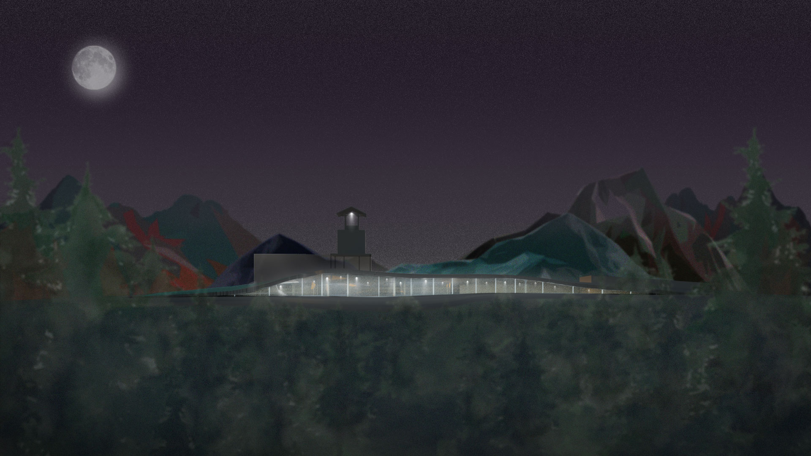
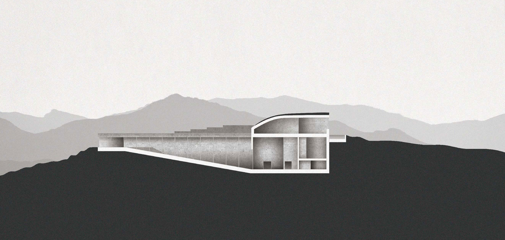
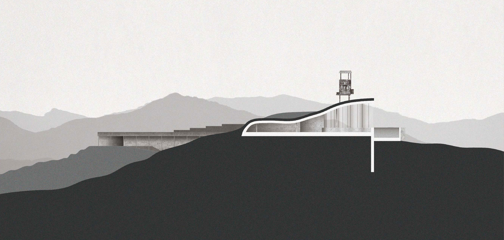

-
DMZ는 남과 북이 여전히 군사적으로 대치하고 있는 위험 지역임과 동시에 민간인의 출입 통제로 인해 자생한 생태계의 보고이기도 한다.
전쟁의 아픔과 생명력을 품고 있는 자연이 동시에 존재한다는 역설은 DMZ의 미래에 대한 다양한 방향성을 제시한다.
상강원은 6·25 전쟁의 역사를 자연을 통해 성찰하고 나아가고자 한다. -

-

Daytime / Night Elevation
-

-

Section